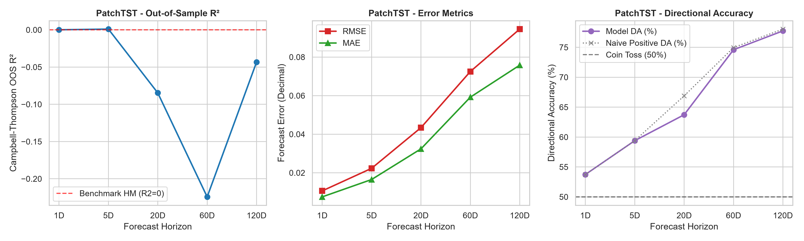
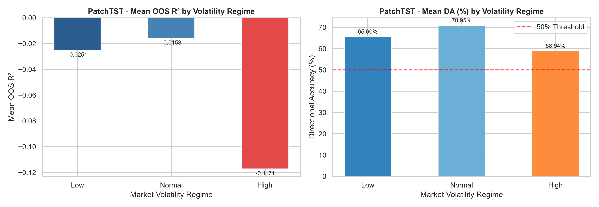
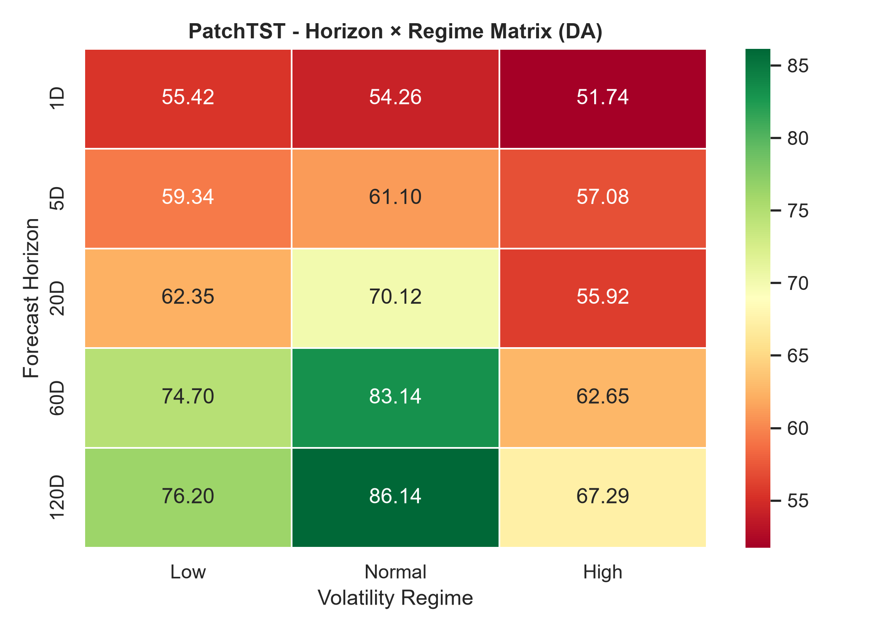
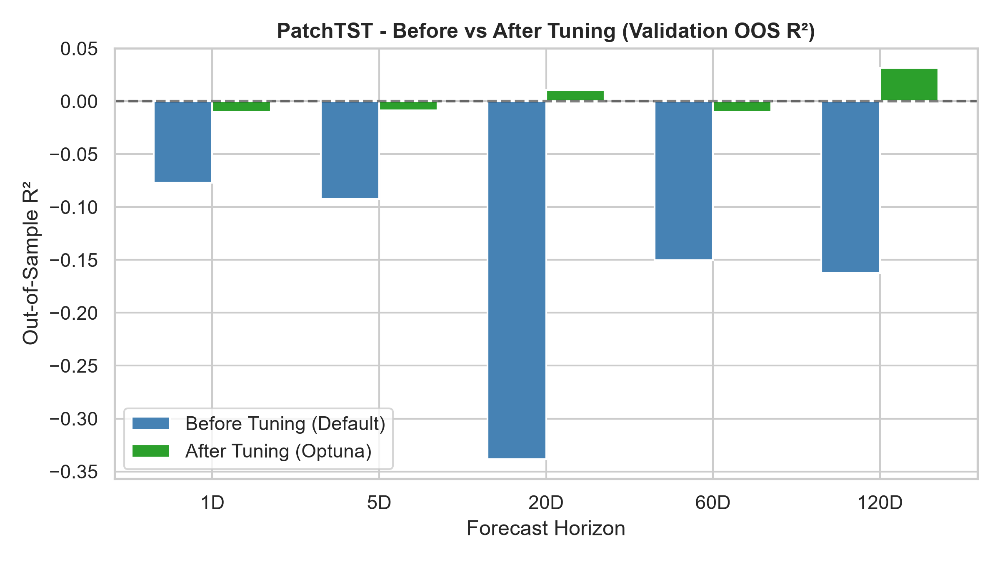

Horizon x Regime OOS R2
Research Project: When Does Equity Return Predictability Decay? A Multi-Horizon and Regime-Dependent Out-of-Sample Analysis
Model Family: Advanced Time-Series Deep Learning | Model Category: Regression
Evaluation Status: Strict Walk-Forward Out-of-Sample & Independent Hold-out Verification
PatchTST{'lookback': 60, 'patch_len': 16, 'stride': 8, 'd_model': 64, 'nhead': 2, 'num_layers': 1, 'dim_feedforward': 128, 'dropout': 0.267057471542213, 'learning_rate': 0.00046996429360211513, 'weight_decay': 0.0001, 'batch_size': 16, 'epochs': 1000, 'patience': 7}The table below synthesizes predictive performance across the three evaluation stages. Note that Part A and Part B evaluate on Walk-Forward Validation (Split 2), whereas Part C evaluates on the strictly independent hold-out test set (Split 3).
| Evaluation Stage | OOS_R2 | RMSE | MAE | DA (%) | Naive Positive DA (%) | Excess DA (pp) | DM Statistic | DM p-value | Sign Test p-value | N |
|---|---|---|---|---|---|---|---|---|---|---|
| Part A – Before Tuning | -0.1641 | 0.0457 | 0.0349 | 58.18% | N/A | N/A | N/A | N/A | N/A | 1360 |
| Part B – After Tuning | 0.0027 | 0.0436 | 0.0336 | 66.04% | N/A | N/A | N/A | N/A | N/A | 1360 |
| Part C – Final Independent Test | -0.0703 | 0.0487 | 0.0383 | 65.84% | 66.61% | -0.01 | -0.5444 | 0.8724 | 0.0006 | 1362 |
Analysis of predictive decay across horizons from ultra-short term (1D) to long-term macroeconomic horizon (120D).
| Horizon | OOS_R2 | RMSE | MAE | DA | Naive_Positive_DA | Excess_DA | DM_Stat | DM_pvalue | Sign_pvalue | Observations |
|---|---|---|---|---|---|---|---|---|---|---|
| 1D | 0.0001 | 0.0106 | 0.0075 | 0.5374 | 0.5374 | 0 | 0 | 1 | 0.0031 | 1362 |
| 5D | 0.001 | 0.0223 | 0.0165 | 0.594 | 0.594 | 0 | 0 | 1 | 0 | 1362 |
| 20D | -0.0847 | 0.0434 | 0.0324 | 0.6373 | 0.6689 | -0.0316 | -0.7985 | 0.7877 | 0 | 1362 |
| 60D | -0.2243 | 0.0725 | 0.0592 | 0.746 | 0.7496 | -0.0037 | -1.5904 | 0.944 | 0 | 1362 |
| 120D | -0.0434 | 0.0945 | 0.0758 | 0.7775 | 0.7805 | -0.0029 | -0.3331 | 0.6304 | 0 | 1362 |

Performance breakdown conditioned on market volatility regimes (Low, Normal, High) constructed using expanding quantiles.
| Regime | OOS_R2 | RMSE | MAE | DA |
|---|---|---|---|---|
| Low | -0.02508 | 0.03542 | 0.02964 | 0.65602 |
| Normal | -0.01576 | 0.04134 | 0.0336 | 0.70952 |
| High | -0.11712 | 0.06412 | 0.0515 | 0.58936 |

Multi-dimensional matrix displaying performance across the 5 × 3 Horizon × Regime state space.
| Horizon | Low | Normal | High |
|---|---|---|---|
| 1D | 0.0001 | -0.0002 | 0.0003 |
| 5D | 0.0008 | 0.002 | 0.0006 |
| 20D | -0.0095 | 0.06 | -0.172 |
| 60D | -0.1594 | -0.1938 | -0.2641 |
| 120D | 0.0426 | 0.0532 | -0.1504 |

Comparison between baseline default architecture parameters (Part A) and Optuna-optimized hyperparameters (Part B) on Walk-Forward Validation.
| Horizon | Before_OOS_R2 | After_OOS_R2 | Delta_OOS_R2 | Before_RMSE | After_RMSE | Delta_RMSE | Before_DA | After_DA | Delta_DA |
|---|---|---|---|---|---|---|---|---|---|
| 1D | -0.0772 | -0.01 | 0.0672 | 0.0112 | 0.0109 | -0.0003 | 0.5243 | 0.5382 | 0.014 |
| 5D | -0.0922 | -0.0087 | 0.0835 | 0.0232 | 0.0223 | -0.0009 | 0.5522 | 0.5971 | 0.0449 |
| 20D | -0.3383 | 0.0108 | 0.3491 | 0.0483 | 0.0428 | -0.0055 | 0.5544 | 0.6824 | 0.1279 |
| 60D | -0.1504 | -0.0102 | 0.1402 | 0.0687 | 0.0658 | -0.003 | 0.6404 | 0.7191 | 0.0787 |
| 120D | -0.1625 | 0.0316 | 0.1941 | 0.0768 | 0.0762 | -0.0006 | 0.6375 | 0.7654 | 0.1279 |

The Final Independent Hold-out Test (Split 3: 2020–2026, 1,362 days) serves as the definitive out-of-sample empirical evidence. All preprocessing steps and hyperparameter choices were completely frozen prior to test inference.
5D)Stability evaluation across the 5 expanding walk-forward folds (Split 2):
| Horizon | Mean_OOS_R2 | Std_OOS_R2 | Min_OOS_R2 | Max_OOS_R2 | Mean_RMSE | Std_RMSE | Mean_MAE | Mean_DA |
|---|---|---|---|---|---|---|---|---|
| 1D | -0.01 | 0.0157 | -0.0353 | 0.0035 | 0.0109 | 0.006 | 0.0072 | 0.5382 |
| 5D | -0.0087 | 0.0088 | -0.0227 | 0.0016 | 0.0223 | 0.0111 | 0.0156 | 0.5971 |
| 20D | 0.0108 | 0.0472 | -0.0491 | 0.0814 | 0.0428 | 0.0277 | 0.0309 | 0.6824 |
| 60D | -0.0102 | 0.2114 | -0.2452 | 0.2706 | 0.0658 | 0.0376 | 0.0526 | 0.7191 |
| 120D | 0.0316 | 0.2688 | -0.2443 | 0.4462 | 0.0762 | 0.0395 | 0.0616 | 0.7654 |

5D (OOS R² = 0.0010)60D (OOS R² = -0.2243)NormalHigh